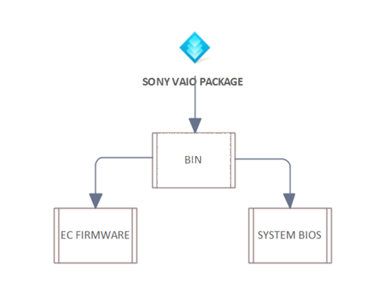
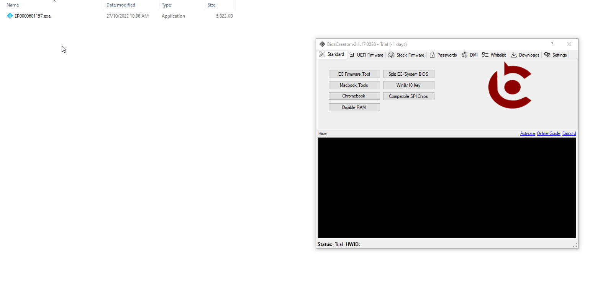

<style>
    .center {
        display: block;
        margin-left: auto;
        margin-right: auto;
        width: 50%;
      }

    a {
      text-decoration: none;
      display: inline-block;
      padding: 8px 16px;
    }
    
    a:hover {
      background-color: #ddd;
      color: black;
    }
    
    .previous {
      background-color: #f1f1f1;
      color: black;
    }
    
    .next {
      background-color: #160042;
      color: white;
    }
    </style>

<section class="support section bg-gray">
	<div class="container">
    <div class="container" style="text-align:justify; margin-bottom:50px;">
    <h4 class="join">Sony</h4>
    <p>FLOWCHART</p>
    
<br>
    <h2>Procedure</h2>
    <li>Drag the file or package.exe inside the firmware.</li>
    <li>Click the extract button.</li>
    <li>Verify the bin file if it has a valid firmware size. (if not, it requires furthermore processing).</li>
<br>
    <p><b>Example:</b></p>
    


    <a href="{{ site.baseurl }}/stock-firmware/toshiba" class="previous">&laquo; Previous</a>
    <a href="{{ site.baseurl }}/stock-firmware/samsung" class="next">Next &raquo;</a>

		</div> <!-- End row -->
	</div> <!-- End container -->
</section> <!-- End section -->